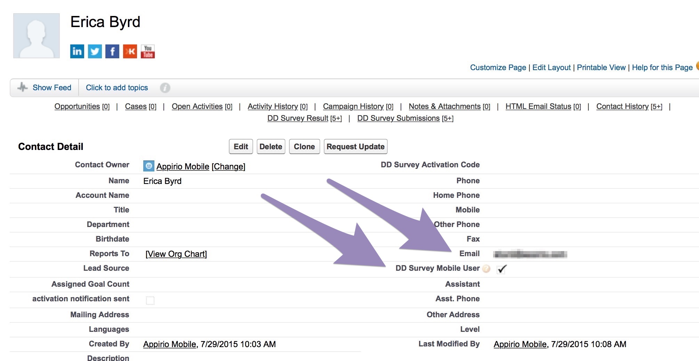
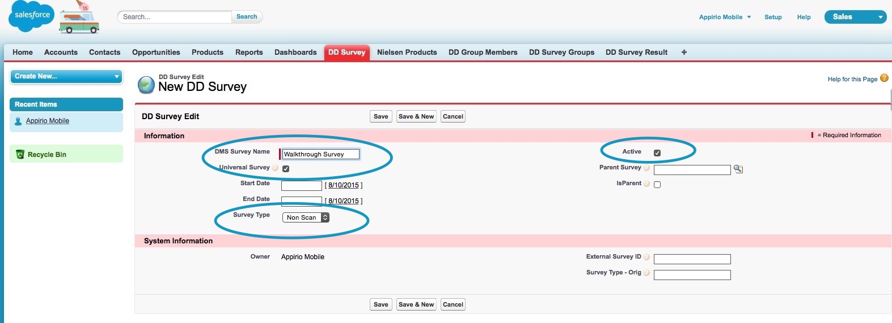
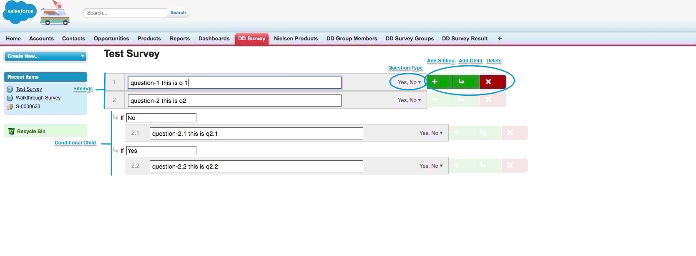

-
Contact/Login access
All mobile-survey users need a contact record in Salesforce. Login to the Salesforce org and create the user’s Contact record (or edit an existing one). Be sure to fill in the “Email Address” field. This is only used to do basic authentication to provide the user access to the mobile-survey app. Also check the box labeled DD Survey Mobile User.
 -
Create new survey:
Select the DD Survey tab and then the New button.
Enter a survey name (as it is to appear in the app), make sure the following are also entered:
- Universal survey flag is selected
- Survey Type is set “Non Scan”
- Active flag is selected
Select “Save” to save this new survey.
On the new survey details view, select the “Manage Questions” button to now start adding questions to the survey.
From here, the Survey Editor UI will guide you quickly through adding and editing questions, and creating conditional relationships. Inside the question editor, you can add new questions, delete existing questions, and reorder questions. All question editing will automatically link the questions logically and hierarchically.
Select the “Add First Question” Link.
Add a question like “Is this question visible?” Just to get started using the tool.
Adding/Deleting new questions
As you hover the mouse over existing questions, the green and red edit buttons will activate for each question while in hover. To add a question, select the green “+” button.
To Delete a question, use the red “X” button. This will delete a question and all related child questions.
The green “+” button (ADD) will add a sibling question, even for nested questions. Example:
- For question 1, ADD creates a new question 2
- Previously existing question 2, and all subsequent questions are incremented.
And:
-
Selecting ADD on any child question will create a new sibling question for that child (Q1.3, select add, creates Q1.4)

Once the new question template is added in the correct location, type the question text in the input test field and chose the question type from the drop down to the right of the question text:
- Select where you see “Yes, No” in the image above
- Then select one of the answer types from the Type: picklist
Possible answer types are:
- Number
- Price
- Select (one)
- Select (Multiple)
- Text
- “Select” options will enable the Answers field. Type in any answer values here, separated by a comma.
Typing text into the “Label for Additional Comments” field will create an Additional comments input box for the question, and the description text will be added to the label. Make sure to set the question type as Text.
Adding conditional child questions
For any question, selecting the green “return arrow” button (NEXT) will create a conditional child question of the parent’s question type.
For Select () type questions, new child questions will be created relative to the answers provided in the comma separated field in the answer type drop down. Additional questions added beyond the specified values will be created with the conditional field blank. Add the conditional into the text field for the question to be evaluated.
If the parent question type is changed, this change is NOT currently propagated to the child, which can create a case where certain child questions will not be displayed since they are considered not relevant. For example, a Yes/No parent with a child question will be YES/NO question as well. Changing the parent to a “Price” type will NOT change the child questions to Price type. Therefore, answers Y/N are not relevant and will not be displayed. It is always good practice to review the survey after edits to make sure question & answer logic is correct.
Moving questions
On the left side of the question is the question number. Hovering over the question number will show a blue box with options for moving the question. Left, right, Up and down are all possible move directions, but only the possible actions will be selectable. (For example, You cannot move a question up if it is Q1)
Known issues ( quotation marks, ‘, special chars, etc in questions)
-
Wait for Synchronization
Heroku Connect can take as much as 20 minutes to synchronize between Salesforce & Postgres and the app. To see your synchronization settings:
- Login to Heroku
- Select Heroku Connect
- On the Overview, select any of the mapped objects.
- In the Mappings:
view, the Salesforce->Database pane shows the frequency of synchronizations. This can be modified by selecting the “Edit” on this view and changing the Poll slider at the top.
-
Login to site
Once data has synchronized, login to the site. The site URL is the URL from the Setup Step #1 when Heroku was deployed.
Hint: It is probably something like - https://your-deployed-app-name.herokuapp.com/#/login
Login with the email address you added to the Contact record in Salesforce (Step #1 above)
Leave the password field blank.
//Add note about what this does in full implementation.
-
Take survey
If you added surveys in Salesforce from the previous steps and waited for Salesforce/Postgres to synchronize, you should see them listed on the Surveys View now. Select one and start answering!
At the end of the survey you will see your answers in summary view in the Review Answers page. From here you can submit them to Salesforce by selecting “Finish”, or you can edit your answers by selecting “Edit” and then changing any/all of your answers. Answers are not stored in Postgres for synchronization to back to Salesforce until the “Finish” button is selected.
-
Finish / Submit
- Wait for HC-> SFDC sync
- Login to SFDC org
-
Select the DD_Survey_Results tab
- Each question/answer combination is stored separately here. You can filter this data and run reports to get analytical details for your use.
{kind=link}
{kind=link}